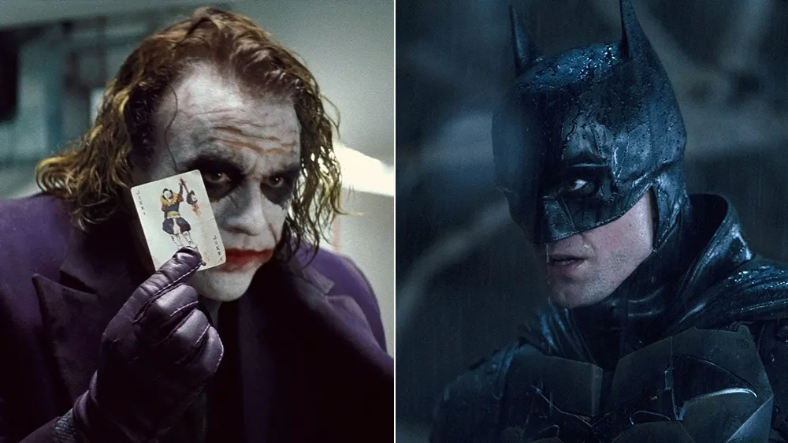

The tarantula on Stern’s face is real?
Yep that's real.Their department alreadly createed fake one for them but Director made them to use real on instead of fake one.

Yep that's real.Their department alreadly createed fake one for them but Director made them to use real on instead of fake one.
Bill Murray was consider Batman before they choose him over Tim Burton.

Do you know,The Dark Knight made more money in six days than Batman Begin the whole run.

He asked William Morris to give him “the craziest, most unproducable script you can find." When Cusack finished reading the Malkovich script, he wanted in immediately.

Instead, the movie relies on stop-motion animation and forced perspective to create the elves’ workshop in the North Pole. “The forced perspective is where you build two sets, one smaller than the other,” director Jon Favreau told Rolling Stone. “One set is raised and closer and smaller, and one is bigger and further away … If you look closely, you can see the two sets meet because we didn’t use CGI to paint over that or blur it.” Jon even took home a cool souvenir from filming: a Louisville Slugger that’s four and a half feet long.

Writer and director Richard Curtis wrote separate, distinct scripts that later became Hugh Grant and Colin Firth’s plot lines in the ensemble film Love Actually. In fact, he had to pare down the 14 different storylines he originally envisioned to 10, even cutting two after filming them.